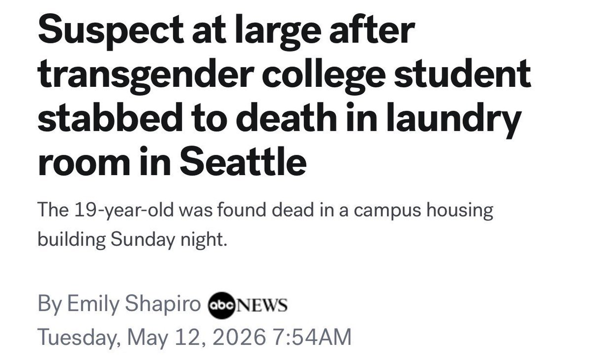

你这家伙在说什么
我对性少数群体向来是友好的，而你这般强词夺理已经失去了理智，污染了我对mtf的印象
另外我所说的平静生活，是居住在中部大平原，平静的生活，哪里管你口中的美国对性少数的态度？
任何人都会受到霸凌，不只是mtf，被霸凌者要争取自己的权利，保护自己

我对性少数群体向来是友好的，而你这般强词夺理已经失去了理智，污染了我对mtf的印象
另外我所说的平静生活，是居住在中部大平原，平静的生活，哪里管你口中的美国对性少数的态度？
任何人都会受到霸凌，不只是mtf，被霸凌者要争取自己的权利，保护自己

@hoshinofujivy @NikkiSmith18280 跨性别在自己学校洗衣房直接被人捅死，非常好平静生活
美国术后不能改证，非常好平静生活
川普联合美国最高法搞国家级扭转机构给mtf强制注射雄性激素，非常好平静生活
你的平静生活美国前几天刚发生mtf被自己家里逼疯拿枪轰爆家人脑袋的新闻
多平静啊是吧 https://t.co/R6zSgYnVk9
美国术后不能改证，非常好平静生活
川普联合美国最高法搞国家级扭转机构给mtf强制注射雄性激素，非常好平静生活
你的平静生活美国前几天刚发生mtf被自己家里逼疯拿枪轰爆家人脑袋的新闻
多平静啊是吧 https://t.co/R6zSgYnVk9